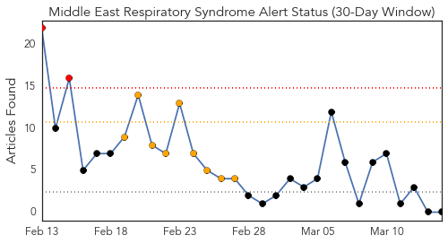
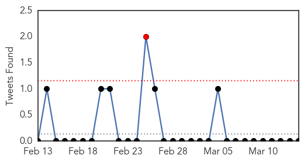
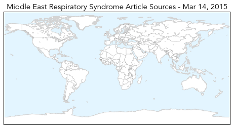
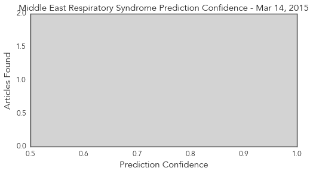

MERS
30-Day Web Trend
2 alerts, 9 warnings

30-Day Twitter Trend
14 alerts, 5 warnings

Article Locations
Article Confidences
Top Articles:
-
No articles found for Mar 14, 2015
Top Tweets:
- 0.549
- AFD Blog `Saudi MOH Announces 2 MERS-CoV Cases, 1 Death' http://t.co/MNRZtNMeTV
Hepatitis
30-Day Web Trend
7 alerts, 3 warnings

30-Day Twitter Trend
1 alerts, 0 warnings

Article Locations

Article Confidences

Top Articles:
Top Tweets:
-
No tweets found for Mar 14, 2015